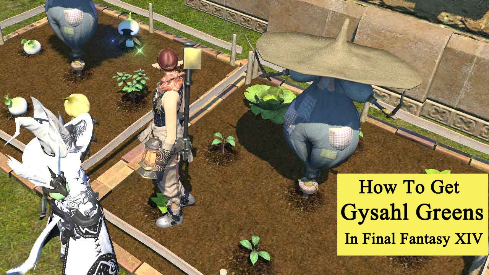

(
(
How to Get and Use Gysahl Greens in Final Fantasy XIV?
You will come across various items while playing the game, such as Gysahl Greens. It is an essential item you can obtain in Final Fantasy XIV and is often used to summon Chocobo companions. However, how to get it? This guide will detail how to get and use Gysahl Greens in Final Fantasy XIV.
What are Gysahl Greens?
Gysahl Greens are a resource that can be used to summon your Chocobo Companion and keep it active in battle. Alternatively, you can also use it as crafting material to create a specific feed, increasing their speed, acceleration, endurance, stamina, or balance.
How to Get Gysahl Greens?
Here are the different methods you can get Gysahl Greens in Final Fantasy XIV:

1. Growing and Harvesting Gysahl Greens
To grow and harvest Gysahl Greens, you're going to need two things: Gysahl Greens Seeds and a plot to plant them in.
1). How to get Gysahl Greens Seeds?
If you have some levels in the Botanist job, you can get them through Intercrossing by having two types of plants next to one another in your plot.
You can also get them through your closest Market Board if you don't mind spending a little Final Fantasy XIV Gil to get them.
2). How to get a plot to plant Gysahl Greens Seeds?
The easiest way to find a plot is through player or Free Company housing, which usually contains a plot of some size.
3). How to grow and harvest Gysahl Greens?
Once you have everything together, you plant the seeds and water them over time like any other crop. They will be ready to harvest once they've bloomed and cycle just like any other plant.
To harvest a Gysahl, break it. When harvesting, you can get 4 different things: Gysahl Seeds, Gysahl Greens, Loverly Gysahls, Or a Golden Gysahl.
2. Purchasing Gysahl Greens
1). Market Board
One of the most efficient, reliable, and easiest ways to get them en masse is to purchase them at a Market Board. Since they're so easy to get, the prices don't often fluctuate very highly all that, and oftentimes, depending on the server you're on, they are cheaper than they are at the vendors.
2). Vendors
Gysahl Greens can be bought from the following Vendors for 36 Gil:
| Vendor name | Location |
| Andia | The Crystarium (X:9.4 Y:12.3) |
| Apartment Merchant | Kobai Goten Apartment Lobby (X:6.1 Y:6.0) |
| Apartment Merchant | Lily Hills Apartment Lobby (X:6.1 Y:6.0) |
| Apartment Merchant | Sultana's Breath Apartment Lobby (X:6.1 Y:6.0) |
| Apartment Merchant | Topmast Apartment Lobby (X:6.1 Y:6.0) |
| Arms Supplier | Lakeland (X:5.7 Y:16.9) |
| Arms Supplier & Mender | Lakeland (X:18.6 Y:18.8) |
| Bango Zango | Limsa Lominsa Lower Decks (X:9.9 Y:11.4) |
| Blessed Merchant | The Fringes (X:27.0 Y:19.8) |
| Bureau Provisioner | The Tempest (X:21.7 Y:26.4) |
| Dadden | Eulmore (X:11.8 Y:11.4) |
| Denys | Foundation (X:8.0 Y:10.0) |
| Dotharli Merchant & Mender | The Azim Steppe (X:11.8 Y:33.5) |
| Enclave Merchant | The Ruby Sea (X:21.0 Y:20.4) |
| Hingan Merchant & Mender | The Ruby Sea (X:38.8 Y:37.7) |
| Independent Merchant | Rhalgr's Reach (X:12.7 Y:11.0) |
| Independent Merchant | The Lochs (X:10.5 Y:21.3) |
| Independent Merchant | The Peaks (X:16.5 Y:36.5) |
| Independent Merchant | The Peaks (X:24.6 Y:5.7) |
| Independent Merchant | The Ruby Sea (X:23.3 Y:9.2) |
| Independent Merchant | Yanxia (X:24.8 Y:13.0) |
| Jasfort | The Crystarium (X:9.7 Y:9.4) |
| Junkmonger | Idyllshire (X:6.0 Y:7.2) |
| Local Merchant | Kholusia (X:15.2 Y:28.8) |
| Local Merchant | Kholusia (X:34.5 Y:27.4) |
| Local Merchant | The Lochs (X:34.1 Y:34.3) |
| Local Merchant | The Rak'tika Greatwood (X:27.7 Y:18.0) |
| Maisenta | New Gridania (X:11.5 Y:11.2) |
| Merchant & Mender | Amh Araeng (X:10.8 Y:16.7) |
| Merchant & Mender | Central Shroud (X:21.8 Y:21.1) |
| Merchant & Mender | Lakeland (X:18.9 Y:35.6) |
| Merchant & Mender | Lakeland (X:35.7 Y:20.5) |
| Merchant & Mender | The Fringes (X:8.7 Y:10.9) |
| Merchant & Mender | The Peaks (X:19.6 Y:11.0) |
| Merchant & Mender | The Peaks (X:27.0 Y:36.7) |
| Merchant & Mender | The Peaks (X:27.7 Y:29.0) |
| Merchant & Mender | The Ruby Sea (X:31.4 Y:36.6) |
| Merchant & Mender | Yanxia (X:15.7 Y:31.2) |
| Mizutt | Lakeland (X:9.4 Y:13.1) |
| Mol Merchant & Mender | The Azim Steppe (X:31.2 Y:11.3) |
| Mord Junkmonger | Amh Araeng (X:12.7 Y:9.8) |
| Oroniri Merchant | The Azim Steppe (X:23.4 Y:21.9) |
| Pixie Hoarder | Il Mheg (X:14.8 Y:32.2) |
| Roarich | Ul'dah – Steps of Nald (X:10.5 Y:9.5) |
| Shan San | Amh Araeng (X:27.1 Y:15.7) |
| Spanner | The Firmament (X:9.8 Y:14.6) |
| Tack & Feed Trader | Chocobo Square (X:5.9 Y:4.7) |
| Tholl Junkmonger | Kholusia (X:11.9 Y:8.8) |
| Tokohana | Kugane (X:12.9 Y:12.2) |
| Traveling Merchant | The Azim Steppe (X:32.5 Y:28.9) |
| Traveling Merchant | The Dravanian Forelands (X:32.0 Y:23.4) |
| Tribe Merchant | The Fringes (X:30.6 Y:25.9) |
| Vath Stickpeddler | The Dravanian Forelands (X:23.6 Y:19.0) |
| Village Merchant | Yanxia (X:30.2 Y:18.1) |
| Village Merchant & Mender | The Ruby Sea (X:5.9 Y:11.4) |
| Ys Gyuf | Il Mheg (X:19.7 Y:4.1) |
| Yuqurl Manl | The Rak'tika Greatwood (X:37.3 Y:17.1) |
How to Use Gysahl Greens?
Gysahl Greens can be seen as an essential item in Final Fantasy XIV, and you can see what they are used for below:
1. Summon Chocobo companions
You should significantly save Gysahl Greens while you are still early in the game because you can use it to summon Chocobo companions.
2. Other uses
Gysahl Greens can be used as an ingredient for crafting certain items. It's also used in crafting the following items:
• Grade 1 Feed - Speed Blend
• Grade 1 Feed - Acceleration Blend
• Grade 1 Feed - Endurance Blend
• Grade 1 Feed - Stamina Blend
• Grade 1 Feed - Balance Blend
• 18px Grade 2 Feed - Speed Blend
• 18px Grade 2 Feed - Acceleration Blend
• 18px Grade 2 Feed - Endurance Blend
• 18px Grade 2 Feed - Stamina Blend
• 18px Grade 2 Feed - Balance Blend
Now, you have seen various ways for "how to get and use Gysahl Greens in FFXIV?" If you want to know more guides, tips, and updates about Final Fantasy XIV, make sure to check out the news page of BUYFFXIV4GIL.COM.